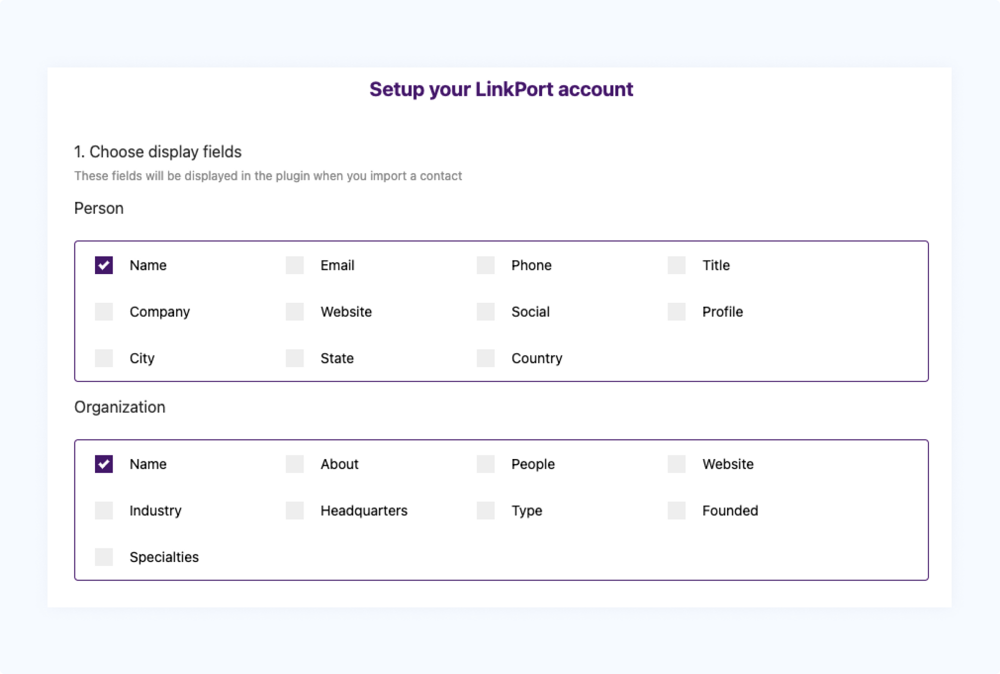
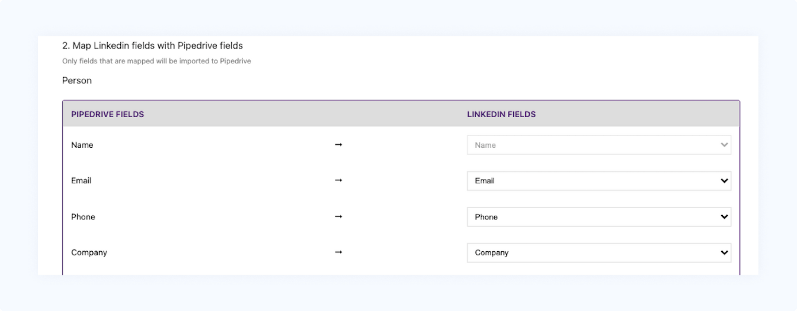
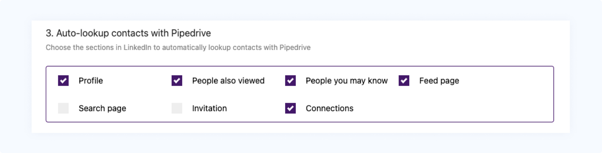

Support Docs
Pipedrive CRM With Linkport
Mapping fields on Linkport-Pipedrive?
Mapping Pipedrive fields to Linkport
As soon as you connect Linkport to Pipedrive CRM, you will be redirected to the "Setup Your Linkport Account" page. You'll see,
- Choose display fields
- Map Linkedin fields with Pipedrive fields
- Auto-lookup contacts with Pipedrive
- Under the display fields section, the Person - Name & Organization - Name will be automatically mapped & you will not be able to edit these. Map any or all of the fields that you would like to be displayed in the plugin when you import the contact from LinkedIn to Pipedrive CRM.

- In the "Map LinkedIn fields with Pipedrive fields" section, the Persons - Name & Organizations - Name are automatically mapped by default and imported to Pipedrive CRM.
Customized mapping:
- Click on the dropdown next to the corresponding Pipedrive field and you will find the option to customize your LinkedIn fields.
- Once the field is successfully updated, you should be able to map the Pipedrive field to the corresponding LinkedIn field.
- All the other fields can be "mapped" or "not mapped" to the fields while importing leads from LinkedIn to Pipedrive CRM.

Note: You cannot map two Pipedrive fields to the same LinkedIn fields. Even if the settings are updated to the same LinkedIn fields, it will not show up while you import the leads from LinkedIn.
- Under the Auto-lookup contact with Pipedrive section, you can choose the sections in LinkedIn to automatically lookup contacts with Pipedrive.
